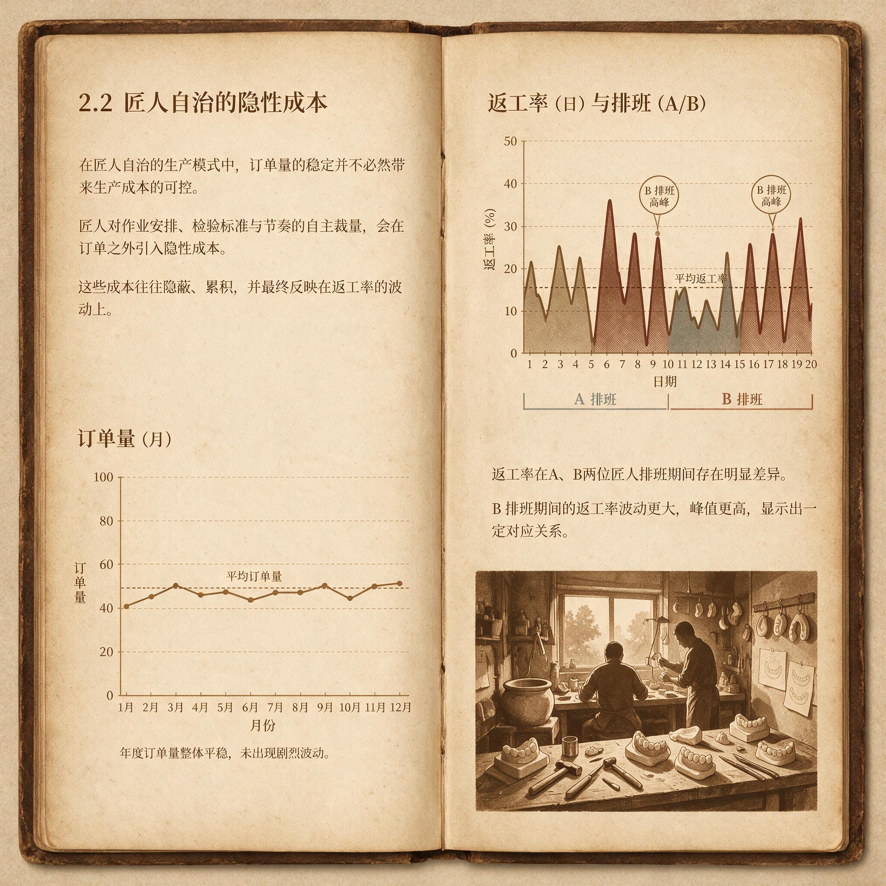

第 1 章
匠人自治的隐性成本
质量损失最先出现在数字里。一份内部生产报表记录了这样的波动：排牙工序的返工率不跟随订单量变化，而是跟随排牙技师的排班表变化。技师A当班，排牙返工率稳定在百分之三点二上下。技师B当班，该数值升至百分之七点一。两人同时出勤，数值落在中间。没有一位生产主管能解释这种非线性叠加。更棘手的记录出现在其中一名技师离职之后，此后六周的返工率中位数从前一年的百分之四点八升至百分之九点三，单周最高触达百分之十三点六。同一期间，该工序的日均产量下降百分之三十一。
类似的数据在不同工序反复出现。一家企业的充胶工位，一名从业九年的技师因迁居离开。此后三个月，该工序咬合过高返工件数为以往同期的二点七倍。质量部的返工记录上，原因一栏高度集中：树脂充填时机判断不当、压力施加不均匀、聚合收缩控制失败。每一项都指向同一个人手上的感觉。
这位技师带过三个徒弟，没有一人在独立上岗后能把返工率压到师傅原有水平以下。其中一名徒弟在独立操作首月返工率突破百分之十二，而工厂内部警戒线是百分之五。这些数字背后不存在恶意的留一手。问题比留一手更深。
义齿制造长期被看作手艺活。这个判断包含两层事实。第一层事实是制造对象本身。义齿必须适配特定患者的口内解剖结构，而口内解剖结构几乎找不到两例完全相同。牙弓形态、黏膜厚度、咬合平面倾斜度、对颌牙的磨损程度、剩余牙槽嵴的吸收状态，这些变量构成的组合数量大到任何预设标准都无法穷尽。
第二层事实是制造过程。技师把石膏模型拿在手里，靠目测判断基牙的倾斜角度是否需要在排牙时进行补偿，靠手指感受充胶树脂在不同温湿度下的流动黏度，靠经验权衡咬合面形态该往哪个方向微调，才能既保证咀嚼效率又不造成对颌牙的过度磨耗。两层事实叠加的结果是：义齿产品的最终形态，在很大程度上有赖于个人对临床需求的理解和转化能力。这种能力在行业中大量以默会知识的形态存在。
默会知识是一种知道如何做但难以完整说出的知识。义齿技师能够在一副模型上标记出需要缓冲的区域，却往往无法用语言解释为什么是这一片区域而不是旁边半厘米。他们知道充胶树脂在某个温度下应该呈现怎样的丝状拉伸状态才适合填入，却很少能将这种判断转化为可测量的温度与黏度对应关系。
这并非表达能力的缺陷。知识本身包含非语言化的感知成分。一位从事排牙工作十六年的技师描述过自己的判断方式，说看到工作模型时牙齿应该在的位置会直接浮现出来，就像看到缺字的句子时正确的字自己冒出来。这种浮现依赖的不是规则推演，而是长期浸泡在数千病例中形成的模式识别能力。当他试图把这套能力教给新人时，说得最多的话是“你看这里”“你感觉一下”“等你有经验了就知道了”。
默会知识很难进入作业指导书。义齿企业的作业指导书通常包含工序步骤、质量标准、设备参数和检验方法。排牙指导书会规定牙位排列顺序、牙弓形态参照线、基托伸展范围。
充胶指导书会规定树脂粉液比、调和时间、充填压力值和固化温度曲线。但指导书无法规定的，是在基牙条件不理想时到底该把人工牙往唇侧偏移零点三毫米还是零点五毫米，也无法规定石膏模型表面有微小气泡导致的局部粗糙该不该补蜡以及补多厚。
这些判断在工位上由技师根据具体情况做出。每做一次判断，技师就把自己对患者口内条件的理解注入产品。决定这副义齿在什么标准下被判定为合格的权力，便在生产过程中分散到了每一道关键工序的操作者手中。
需求定义权的让渡，在行业早期是一种合理的经济安排。义齿加工行业起步时以小型技工所为主，一个师傅带两三个学徒，从接模到出货全程参与。师傅直接与临床医生沟通，理解患者情况，做出整副义齿。这种模式下，协调成本接近于零，因为需求定义者与需求执行者是同一个人。
当技工所规模扩大，工序开始分工，排牙的只排牙，充胶的只充胶，打磨的只打磨，需求定义权却没有同步集中到组织层面，而是沿着工序被切割成若干碎片，分别留在不同工位上。
排牙技师根据自己看到的模型决定牙位，充胶技师根据自己感受到的树脂状态决定填充方式。两个判断之间没有组织级别的验证机制。同一副义齿在不同工序被不同人的不同经验体系分别加工，最终成品的质量一致性取决于这些经验体系之间的偶然兼容程度。
这种兼容程度远不如管理者以为的那么高。一家中等规模企业的质量部做过一项内部测试：将同一副上颌半口模型分发给四位排牙技师独立完成排牙，然后测量咬合接触点的分布差异。结果，四位技师排出的牙列在咬合平面倾斜角度上的最大偏差为四点二度，在正中咬合接触点数量上的最大差异为五个。临床可接受的偏差通常在两度以内，接触点数量偏差不超过两个。
四位技师中，三人的从业年限超过八年，一人为五年。从业年限最长的那位技师排出的牙列，在该企业自有的咬合精度评分中拿到八十九分。从业年限最短的那位拿到六十二分。同一副模型的输出差异接近三十分。这副模型最终被判定为合格还是不合格，取决于它被分配给谁。
同一位技师的输出放在时间轴上，波动同样存在。测试完成三个月后，那位拿到八十九分的技师被要求在不知情的情况下再次对同一副模型排牙。第二次结果在咬合平面倾斜角度上与前一次偏差一点七度，接触点数量差了两个。评分从八十九分降到七十六分。
同一个人，同一副模型，三个月内的输出精度出现了足以影响临床效果的差异。导致波动的原因可能很多：排牙当天的状态、对模型的观察角度、对基牙条件的瞬间判断。所有这些原因的共同特征是无法被记录，无法被追溯，无法被管理。
管理者面对这种情况的第一反应往往是加薪留人。从逻辑上看这个反应没有错：如果关键工序的质量和产能高度依赖特定个人，那么留住这个人就是保住质量和产能。但它只解决了人才流失带来的瞬时风险，没有解决默会知识在组织内的沉淀问题。薪酬增加把技师的个人价值量化为工资数字，这个数字不会自动转化为组织能力。那名排牙技师离职后，他的经验随之离开。
留下的只是一堆他参与制作的产品档案，记录了做过什么，却没有记录怎么判断该这么做。档案里有牙位图，有咬合纸印记照片，有树脂充填量记录。“为什么选择这个牙位而不是那个”“为什么在这个时点施加压力而不是更早”——这些判断依据仍然留在他脑子里，跟着他去了下一家企业，或者另一个行业。
薪酬本身还会制造新的组织张力。当管理者把特定技师的工资推高到同岗平均水平的一点五倍甚至两倍时，薪酬差异传递的信号会迅速被车间里的其他人读懂。信号有两层。第一层：你的价值不如他。第二层：你有机会通过让自己变得不可替代来要到更高工资。
第一层引发公平感问题。当其他技师认为自己面对的病例复杂度与高薪技师相当，只是返工率统计未被单独追踪时，不满就会积累。
第二层引发的行为激励与组织目标背道而驰。既然不可替代性可以被兑现为薪酬溢价，那么主动把经验固化为组织知识便不符合个人利益。不写详细操作笔记，不把关键判断方法说清楚，不主动参与标准制定，这些行为不该被简单归为道德问题。
它们是制度激励的产物。匠人自治的另一个隐性成本表现在交期承诺上。义齿加工的交期通常以接模后若干天为计，诊所和患者据此安排试戴和佩戴。大多数企业的做法是，接单后台和生产管理部门根据当前工单积压量给出交期预估。这个预估的可靠性建立在每一道工序都能按时完成的前提上。
当关键工序被少数技师垄断，交期承诺就变成了一项高风险担保，担保的对象不是组织的平均产出速度，而是具体个人的持续在岗状态。一旦该技师因病请假、临时离职或工作量超出日产能上限，交期就会产生连锁延误。延期产生的成本不只是客户投诉，还包括加急生产的加班工资、优先插单对其他订单的挤出效应，以及赶工导致的质量下降和随之而来的返修成本。
一家以固定修复为主的企业曾在三年间两次经历排牙关键技师突发离职后的交期危机。第一次，该技师离职当月，准时交付率从百分之九十二下滑到百分之六十七，客户投诉数量增至平时的三点二倍。企业紧急从同业借调技师，给予留任技师加班补贴，并将部分订单转包给小型技工所。
三项措施合计产生额外成本约三十八万元，超过这位技师一整年的薪酬总额。两年后类似事件再次发生，同样工序、同样原因、同样的成本曲线。管理者在第一轮危机后并非没有尝试建立防范机制，包括要求技师把操作经验写成步骤文档，优化排班制度以分散工序依赖性。
这些机制在执行中遇到来自同一个源头的阻力：只要产品标准还需要依赖个人判断来落地，任何试图把个人经验转化为标准流程的努力都绕不过一个障碍。技师会告诉你，每个病例都不同，没法用统一标准。他说的是事实。
这个事实指向匠人自治模式难以被管理手段修正的深层原因：它不只是一个管理问题，而是一个认知结构问题。在匠人自治模式下，技师对产品质量的判断来自集成了数千个病例经验的个人认知体系，这个体系以模式识别而非规则推理的方式运行。当管理者试图把这种模式识别产物转化为文字化规则时，恰如要求一个人用语言完整描述他如何认出自己母亲的脸。他知道就是这张脸，却难以穷举构成识别所依赖的全部特征及其权重。
结果，写出来的规则要么过于宽泛而失去指导意义，要么过于窄化而在面对个例时产生机械应用的误差。两种情况下，技师都会很快发现照章办事的产出质量不如凭感觉干的产出质量。规则被绕过，制度被架空，管理回到原点。
这里出现了一个关键的结构性后果。当个性化医疗需求必须经由具体技师的理解才能转化为产品时，需求定义权已经实质性地从组织和临床端向工位端发生了转移。医生在临床端给出的印模和设计单传递了患者口内条件的信息，但这些信息不足以构成完整的制造指令。它们在工位上被技师解码和补全。补全过程调用的不是企业制定的标准，而是技师个人的经验。于是，决定产品最终形态的权力不在管理者手里，不在品控部门手里，也不完全在临床医生手里，而在工位上那双拿到模型的手里。
匠人自治的隐性成本，根源在于个性化医疗需求的定义权被让渡给了个人。这使任何试图从外部强加的标准化流程都难以落地，因为标准化流程所依赖的定义权，即决定合格与否的权力，原本就不在外部流程制定者手中。
这个判断解释了为什么许多义齿企业的标准化项目投入大量时间与资金却收效甚微。问题不在于标准写得不够细，不在于执行者素质不够高，也不在于管理层推动力度不够大，而在于标准制定权与需求定义权分属不同主体。品质部门制定的标准属于组织，落实标准所需的判断权在个人。
二者冲突时，个人判断会胜出，因为最终对产品负责的是技师，返工的第一成本由他承担，临床投诉的首轮解释由他面对。品质部门在组织架构上高于工位，但在现实的生产逻辑中，是工位在做最后决定。
也正是在这里，匠人自治模式暴露了自己的适用边界。当企业规模较小、产品复杂度有限、技师团队相对稳定、临床合作关系单一时，匠人自治有效，准确地说，它是所有组织模式中协调成本最低的。一旦企业需要扩大规模，需要跨区域复制产能，需要对接更多临床医生和更多样化的病例类型，这种模式就从优势变成负债。扩大规模意味着需要更多技师。
更多技师意味着更多个人经验体系在组织内部并行运行，这些体系之间的不一致性会在产能扩大过程中被放大。跨区域复制意味着技师与医生之间的直接沟通通道被拉长，个人判断所依赖的语境信息，如医生偏好、地区患者特征、诊所设备条件，变得不再即时可得。
需求定义权从个人向组织的回归，便从重要变成必要。回归的路径不是收回。收回意味着取缔技师的判断能力，这在技术上不可能。义齿制造的个性化本质决定了它必然包含无法被提前穷尽的判断空间。
路径是重构：把可以被标准化的部分上升到组织层面，把不能被标准化的部分界定清楚边界，让技师在明确划定的容差区间内行使判断权而不超出。这要求企业首先知道什么可以标准化，什么无法标准化但可以被参数描述，以及当前让渡出去的需求定义权具体分布在哪些工序、哪些人、哪些操作环节上。这需要一次对默会知识的系统体检。正例存在于那些完成了部分体检的企业中。
一家区域性义齿企业在扩张至第二家工厂前做了件与同行不同的事：它没有急着招募更多技师，而是先对排牙工序进行了十八个月的参数记录。记录的对象不是产品合格率，而是排牙工位上的判断动作。企业将排牙技师在操作中需要作出的判断逐项拆解，分离出几类可以外化的事项：基牙倾斜角度的测量基准、牙弓形态的参照坐标系、咬合平面倾斜度的校正范围。
每一项都经过多轮试验后写入作业文件。文件不是替代技师判断，而是为判断划定边界，超过边界的部分由技师自行决定。对边界内的工艺偏差，企业设定了一套容差区间，区间的上限由医疗安全决定，下限由交付承诺决定。排牙技师在该区间内拥有完整的调节权，不必逐例请示。
超出区间的病例则升级至生产级评审。这套机制运行一年后，该企业排牙工序的返工率从百分之六点八降至百分之四点一，不同技师之间的输出差异从原来的最大四点二度压缩到一点七度。更关键的是，新入职技师达到独立上岗能力所需的时间从十一个月缩短到六个月。这不是一个完美的解决方案。
容差区间的设定需要在样本量足够大的基础上反复校准，前期投入的时间和管理资源并非每家企业都承担得起。而且，这套机制在充胶工序的推进速度远慢于排牙工序。充胶涉及更多触觉和温湿度感知成分，可外化的参数比例更低，容差区间的边界更模糊。企业最终只界定了充填压力范围和固化曲线的下限与上限，中段仍交由技师判断。
这证明匠人自治的改造不是一次性的制度设计，而是一个与工序特性逐项谈判的漫长过程。反例比正例更具教训价值。一家曾经发展迅速的企业在三年内将技师数量从二十一人扩至六十四人，覆盖三个加工点。管理层相信，只要给足薪酬，经验丰富的技师可以快速复制。
但他们复制的不是产能，而是经验体系间的不一致。三个加工点之间的排牙质量差异在第二年开始显性化，同一类病例的返工率从百分之四到百分之十一不等。企业推出统一操作规范，要求所有技师严格按参数作业。结果是返工率短期下降后强势反弹。
原因被记录在质量部的返修分析里：规范在标准病例上有效，在复杂病例上产生系统性偏差，而技师在规范与个人判断冲突时选择了被动服从，放弃了原有判断。半年内，该企业因返工和客户投诉累计损失超过一百万元，其中一名核心技师离开后，原有客户群中的三个诊所终止了合作。企业最终收编了两个加工点，回归到十七人的团队规模。
扩张失败。还有一个更微妙的失败样本。一家小型技工所试图用高薪锁定一名充胶技师，给出的月薪达到市场水平的两倍，另加年终分红。技师留下来了。三年后，企业主发现，自己不敢对这名技师的工序产出提出任何改进要求。
任何关于填压方式或固化曲线的讨论，都会沦为一场小心翼翼地协商，因为管理者清楚，这名技师离开的代价远高于屈就他的不满。充胶工序的返工率在过去三年没有下降，因为下降的激励在技师那里是不存在的。他的不可替代性本身就是他的合同保障。企业主在一次行业交流中说，自己不想再扩产了。维持现状是唯一的生存方式。
这句话是匠人自治的真实成本：它锁死了组织改善的能力，让管理者从决策者变成了依赖者的管家。回到默会知识的测量问题。一家企业曾用折线图记录某关键技师休假期间的工序表现。图中，该技师在岗时，日产量稳定在三十二至三十八件之间，一次检验合格率维持在百分之九十一上下。技师休假的第五天，日产量降至二十一件，一次检验合格率跌破百分之七十八。休假结束返岗后第六天，两项数据恢复到原有水平。
折线图呈现出一个清晰的下陷，像是一条无法被交班计划填平的沟。企业主看见这张图后做了一个决定：此后该工序不允许单人连续作业超过五天。这道指令表面上减少了单点依赖，实则是用轮换掩盖了知识无法传递的事实。下陷可以暂时轮换出去，却不会消失。
在所有这些案例中，调节权都是缺位的。匠人自治的实质，是调节权过度集中于工位级。交期、质量、工艺参数，这些变量在工位级别被技师以个人判断调节，企业级别和生产级别没有正式权限介入。
默会知识的形成路径，往往被企业主和管理者低估为“熟能生巧”。但熟能生巧四个字抹掉了其中大量试错成本。一位充胶技师在离职前接受访谈时，曾解释过自己判断树脂填充时机的依据。他说自己会听搅拌时料杯里的声音变化。粉液刚混合时是沙沙的湿响，像湿沙从指缝漏下；二十秒后声音发闷，像指甲划过潮纸板，那时再等几秒就可以往模型里填。
但这个经验不能在潮湿天气用。他补充，湿度大的时候，声音照常变化，填进去会偏早，因为树脂吸潮后黏度曲线不一样。怎么判断湿度？他看一眼窗玻璃。如果玻璃上蒙着水汽，当天就要把手感往后调。没人教他这个，是有一年梅雨季他连续返工了七副义齿，后来盯着车间那扇窗子才慢慢把两件事联系起来。
企业也试过让这种判断变成可传授的步骤。一个学徒记录了师傅在充胶前看窗口、听声音的全部动作，甚至画了时间线。独立上岗第一个月，他的返工率没有低于百分之九。记录里详细写下了声音从沙到闷的转折点，但学徒无法在车间嘈杂的背景噪音中准确分辨那个转折点。声音的记忆不是语言能够传递的，它需要在无数次失败中重新长出来。
这种重新长出的过程，对一个新技师而言，至少要跨越两个到三个梅雨季，经历几十次返工，才能把听觉、视觉和手上压力连接成一套可重复的判断。企业扩张的速度往往等不了这么长时间。于是出现了一种不对称：技师个人的感知积累速度是线性甚至缓慢的，而企业试图复制的速度是资金的、设备的、订单的。前者无法用后者加速。
这类下陷在轮换中被暂时隐藏，却没有消失。当企业把单人连续作业限制在五天内，确实可以阻断某一天的极端依赖，却改不了依赖本身。因为依赖不在排班表上，而在那套无法被工资购买也无法被文件编码的感知体系里。感知体系长在个人身上，随个人状态波动，随天气变化，随师徒关系松散或紧张而消长。它不服从组织的时间表，也不服从规模的线性假设。管理者看到折线图下陷，只能下令轮换，而轮换本身恰恰证明组织没有能力把那种判断从一个人转移到另一个人。
因为没有正式的调节权分配，管理者只能通过加薪、人情、谈判等非正式手段来影响工位级判断。非正式手段的效率取决于个人关系质量，而不是组织结构。这正是分级漂移的土壤：没有正式分级，订单的复杂度判断完全由接单技师凭个人经验完成，病例复杂度的差异在系统里不可见。
随着病例类型多样化，个人判断的分级与实际工艺需求的偏离逐渐累积，返工率上升时，企业只能回头找那个做出初始分级的人，而不是找系统中的分级缺陷。缓冲阈值同样不存在。匠人自治下，缓冲靠个人预留，老练的技师会在排班时给自己留出余量，但余量的多少全凭各人习惯。
没有阈值概念，就没有触发的临界点。订单积压到一定程度，缓冲从调节装置变成库存坟场，只是管理者在月底对账时才看得见的成本。企业试图用高薪留人，技师也在用自己的方式衡量这笔交换。薪酬是必要条件，却不是充分条件。技师把几十年累积的手感和眼力看作一种无法被时薪或月薪完整计价的能力。
一位从业二十年的技师说过，他带的徒弟一年内能学会全部工序的基本操作，但判断一个边缘病例是该加瓷还是该调对颌牙，没有十年看不出来。这不是抱怨，是物理事实。物理事实意味着，即使企业付了高于市场水平的工资，技师仍然知道自己身上积累的时间，那些在反复失败和修正中形成的感知分辨率，无法被工资条上的数字完全体现。这种认知沉淀为一种态度：对工位上那套台账管理体系的平静疏离。
企业付钱买技师的时间，却始终没有买到技师的眼睛。这种疏离进一步锁死了默会知识向组织知识的转化通道。通道不是被某个人的小心眼堵住的，而是由双方对价值衡量方式的根本分歧所共同维持。技师认为自己的价值在不可复制上，企业试图用工资把不可复制转化为可控预算项。
两种逻辑只能达成暂时的妥协，而非持久的解决。分歧悬在那里。当企业规模试图突破现有边界时，对个人的结构性依赖就不只是隐性成本，而会成为一种被行业分散结构放大的组织诅咒。薪酬解决不了这个诅咒，因为它解决不了定义权的归属问题。定义权不回归组织，规模每向上一格，匠人自治的隐性成本就多一重。
